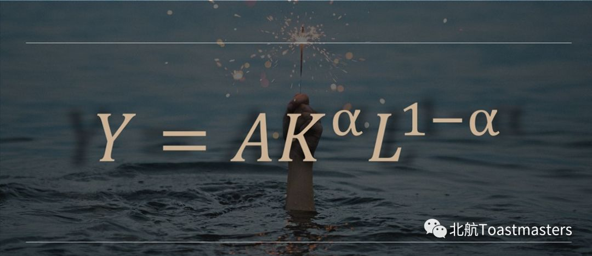
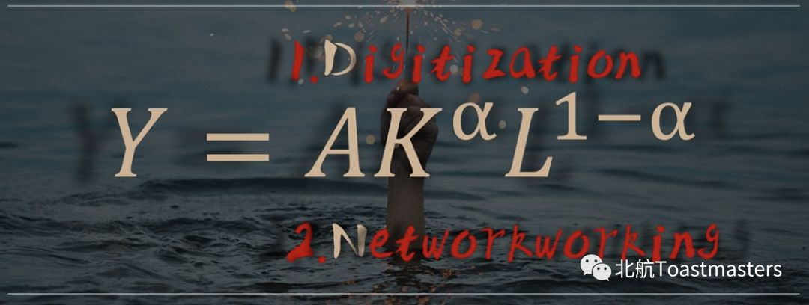
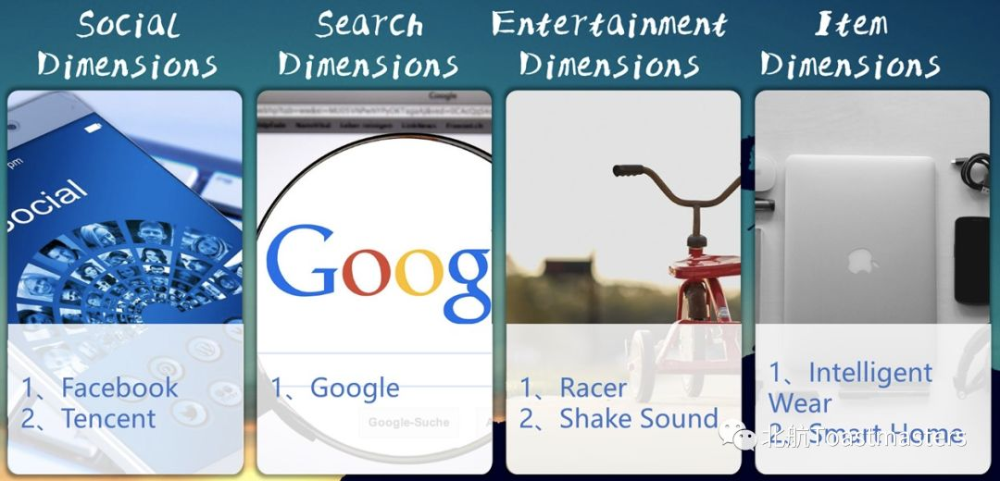

小编趁着Chen主席大大回南京之际，赶紧“滥用私权”编辑2018年最后一篇推送啦～这篇推送主要是带领大家回顾一下上次会议中的精彩演讲～
演讲人Lily分享了她一年来学习金融的小想法～可能外行人会听得云里雾里的 包括小编><
在这里感谢Lily提供了中文翻译～帮助小编理解神奇的Financial world 接下来小编带领大家学习一下有趣的金融小知识

首先来看看这个有趣的公式，这是经济增长理论最重要最基础的一个公式。That means,our economic growth is caused by advances in technology,accumulation of capital,and an increase in labor.

如果要加上一些new things促进经济增长，你会想到什么呢？Lily加上了数字化和网络化。如今经济全球化，网络化程度越高，经济发展也越高，而光有网络还不够，数字化能把具体变抽象，支撑起复杂的社会结构
我们人类历史上经济的第一次飞跃是工业革命。实际上工业革命成功的一个重要因素是资金的网络化过程，将分散在每个人手上的资金聚集在一起形成了资本，有了资本之后才能将人力、资本以及经济增长形成一个正循环。It can be said that the first leap in economic development is the digital networking process of money.
而第二次飞跃就是互联网革命，它实现了人的数字化、网络化。

其实人的维度更多，比如人在社交的维度产生了Wechat、Facebook；在搜索的维度产生了Google；在娱乐的维度产生了抖音。
针对多维度的L（公式中滴），我们实现了数字化、网络化，经济得到了更高的发展。Therefore,the development of human beings is the history of digitization and network.
现在我们每个人都会使用移动支付，这其实就是将人的维度和资本的维度乘起来，这将给经济带来更高指数的发展。将人和资本链接起来，再网络化，这就是科技金融，这就是未来。
我们个人要获得发展，也要顺应这个历史潮流～
Anyway新的一年要来啦～希望我们都可以实现个人发展，顺应金融科技的潮流 暴富起来！
And～every single dog can find another dog
Happy new Year～
https://mp.weixin.qq.com/s/laQ0EF3Y-Wqty4D9EHaeig
本页为抢救式本地归档，图文已永久保存。